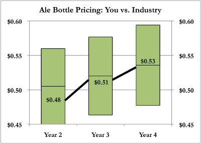

The population of Megapolis grew 5.00% last year, bringing the total number of inhabitants to 420,000. Further, given the rising prominence of the technological firms, per capita income increased. This led to an increase in beer demand: 35,280,000 liters of beer were consumed last year. The market has continued to tilt in favor of lagers and stouts. Last year, one in three beer purchases was a lager, with almost 12 million liters consumed. Stout demand topped 3 million liters, while ale demand reduced by 1.8 million liters to 20.1 million liters.
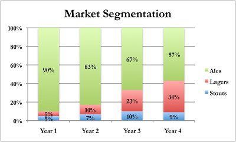
For the past four years, the average annual growth rate for lagers has been 98%, meaning that the lager market has nearly doubled every year. The ale market, conversely, have shrunk at an average rate of 11% every year. The market for stouts has been mixed, increasing in most years but declining last year. There is no denying the strength of the lager market and the fact that there has been, and may continue to be, a significant change in consumer preference. Over the next two years, lagers are expected to continue to grow, though it is impossible that the category would continue to double its size every year. Most research reports have stated that the Stouts category will remain mostly flat, but that ales and lagers could even change places as the leading market segment.
Based on last year’s demand levels, an ale machine run at full capacity would have accounted for 7.5% of the ale market demand. Similarly, a lager machine run at full capacity would have accounted for 7.5% of lager demand. These are stark differences from what one ale or lager machine would have accounted for in the market environment just a few years ago. If lager demand continues to increase and ale demand decrease, the percentage of demand these machines account for will continue to shift. If lager demand were to increase by just 15%, the maximum capacity of one lager machine would equate to 6.5% of total demand, rather than 7.5%. Assuming this increase came at the expense of ale demand, one ale machine could potentially capture 8.2% of the total demand.
Depending on how well your pricing and packaging strategies match consumer demand, it is possible that you could increase your market share in the lager category by 2-5%. However, as the ale market is shrinking and existing breweries are becoming increasingly competitive, you may not have much room to grow in this category. Given the heightened competition, pricing will be a very important factor to consider.
In terms of packaging preference, there are two important facts to consider. One, with an increasing per capita income, many residents of Megapolis are tending to eat out more often, thus pushing up demand from restaurants and bars. Two, residents of Megapolis are becoming more conscience of how they treat the environment. People are recycling more, which led to the opening of an aluminum recycling plant on the edge of town. Aluminum is the main input for beer can packaging. Since aluminum is now easily recycled, patrons of supermarkets are starting to purchase more cans than bottles. This awareness for protecting the environment is also spreading to restaurants and bars, which have shown the ecological benefits of drinking beer from a keg rather than a bottle, since it reduces the overall amount of garbage. The consumer preference trends can be observed in the following charts.
In the coming year, you have decided to take a closer look at the pricing of your products and the quality of ingredients used in your manufacturing process. Based on the competitive matrix in Year 2, you decided that a medium-priced ale with medium-quality ingredients and a medium-priced lager with high-quality ingredients were the best products to ensure maximum market penetration.
The charts below illustrate the price points for your various products relative to the industry price range. For the past decade, inflation has been constantly pegged at 3.00%, which is reflected in the annual increases in the general price ranges. Recall that lagers tend to sell at a higher price point than ale of the same quality. The dollar values indicate your price point. The blue columns represent the industry price range. The black lines within the blue bars reflect the medium price. Remember to pay attention to the values of the axes. While you may not have sold all of these products during the past three years, you had prepared a pricing plan in case you had opted to manufacture them all.
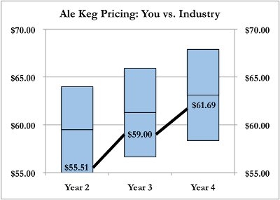 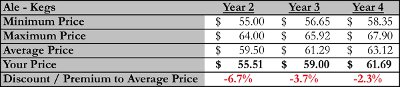
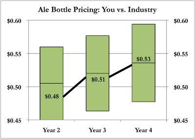
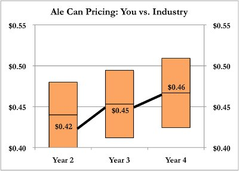 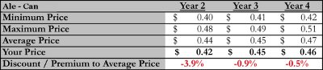
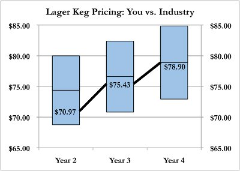 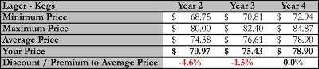
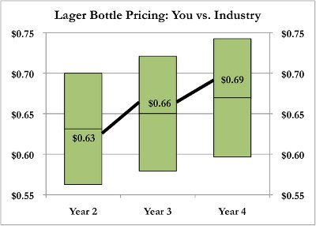 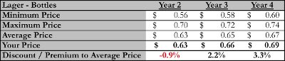
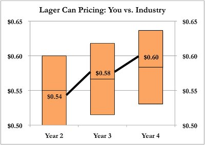 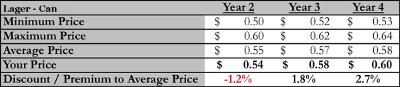
In the early years of your brewery’s operations, you realized that focusing on restaurants and bars would increase consumer exposure to your product, which is important for new entrants in the market. In order to motivate restaurants and bars to promote your product, you discounted the selling price of bottles and kegs. Stores and supermarkets did not warrant receiving the same discount, since - because most consumers shop without the assistance of store personnel - their personnel are not motivated to promote your product over anything else. Given that kegs dominated the market, you decided to set a higher discount on this type of packaging. The discount equated to 6% less than the typical price of one keg. While there was still a discount on bottles and cans, it was set at 3.00%.
Seeing how these discounts helped expand your customer base and improve customer awareness, you decided to continue them to a lesser degree in Year 3. You reduced the discounts on kegs to 3.00% and removed the discount on bottles and cans. The decision to continue discounting keg products was also driven by the fact that keg packaging dominated the market. Moving into Year 4, market trends suggested that consumers were eating out more due to increasing per capita income. As a result, restaurant and bar owners were keen to take advantage of beer producers since demand for kegs was high and competition was heavy. To motivate restaurants and bars to continue promoting your product, you were forced to increase the discount on kegs. However, the increasing per capita income also led to decreases in price sensitivity, meaning that customers would likely pay a little more for the same product since their income has grown. The increased discount on keg packaging in Year 4 was offset by a slight increase in bottle and can prices, compared to the previous year.
This year, you will need to decide on the price points for all of your products and the quality of ingredients used in manufacturing. There are a number of factors you should consider when making these decisions. First, lagers are viewed as premium products and will always sell at a higher price than ales of similar quality. Second, the pricing strategy for cans and bottles of lagers did not result in any market share loss and it seems that customers are willing to pay slightly more for a high-quality lager; thus, slight increases in the price for lager products might be sustainable. Third, as the ale market continues to shrink, competitors are using price reductions to maintain market share. For example, you recently noticed that a keg that used to sell for $70 is now being sold for $67.35. As a result of this price pressure, ale producers continue to undercut one another, which is forcing you to also cut your price so as to avoid being driven out of the market. In order to maintain what market share you have accumulated, you will have to sell your ales at progressively lower prices. Fourth, you may decide to change the quality of ingredients used in your products. Lower-quality ingredients are cheaper inputs, but low-quality products would need to be sold at lower prices; conversely, higher-quality ingredients could lead to the ability to sell at a higher price. However, changes in product quality may surprise consumers, resulting in market share loss. Finally, remember that inflation will lead to an overall rise in the price range, which should also be considered in your pricing decisions. Inflation this year is expected to be 3.00% again.
Using market information from the previous year, the expected inflation rate in the coming year, and expected price trends across multiple segments, you have created the following matrix to guide your pricing decisions.
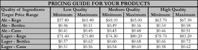